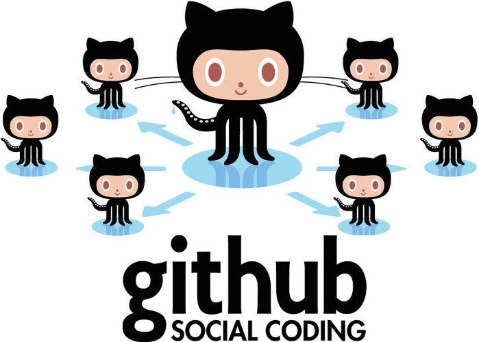

"I made some games, but I'm pretending like I didn't because they all turned out weird".
- Shigeru Miyamoto
Have you ever... wanted to go back to before you did something you really wish you maybe hadn’t done?
For example, I once ate seventeen delicious bagels in one 32-minute sitting. Maybe I wish I hadn’t eaten so many bagels.
If you’re a computer programmer, you can do just that - return to a previous version of reality in which something that was done is yet-to-be-done. They call this magical tool version control.
Here’s how it works.
Let’s say I use a handy version control management system called git.

With git, I can manage all my versions on my computer. Except (with inspiration from the ingenious Stephanie Oh's awesome blog post Git vs. GitHub for Dummies), instead of managing my code, let's just say it manages my life.
I save versions of myself regularly. I saved the version of me that had eaten eleven bagels in one sitting. I saved the even older version of me that had eaten a mere six bagels in one sitting. Heck, I even saved the long-forgotten version of me, years past, that hadn’t even heard of bagels!
So, back to the present me, seventeen bagels strong. And by strong, I mean very, very ill. I will spare you all details, because this blog post is about web development and not puke.
Whatever though, because I’ve got a FREAKING TIME MACHINE. I’m going back in time to before I even heard of bagels.
Heard of what? No idea. Heck yeah. Version control.
But, you know, there’s no reason to keep versions of your code, or versions of your life , to yourself. In my case, I’ve got to share that 17-bagel me with the world.
This is where Github comes in.
While git lets my code hang out locally on my machine, Github is a literal hub on the internet where everybody can share their stuff.
Makes a lot of sense to share your code. When you put it out there, others have the opportunity to learn from it.
With that in mind, you might as well share your life too (but maybe not on Github)! Just as with code, I'm sure we've all got tons to learn from each other about how to rock out this life thing.
And, of course, we can learn a bit from each other about what not to do as well.